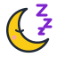

Connecting to the server…
How to play
- Players take turns in order. Roll the die and move your pawn forward.
- On a question square, answer the multiple-choice question within 30 seconds. Right: stay there. Wrong or too slow: go back to where you started your turn. You get more questions on the themes you find hard.
- Shortcut (8 → 13, 21 → 25): jump ahead.
- Bridge (24): cross straight to square 28.
 Shark (12): skip your next turn.
Shark (12): skip your next turn. Whirlpool (26): skip your next 2 turns.
Whirlpool (26): skip your next 2 turns. Boat (29): sail back to square 5.
Boat (29): sail back to square 5.
Rest (5, 16, 27): a safe square, nothing happens.- After a special square your turn ends, with no question. If it sends you to another special square, that one applies too.
- You must land exactly on FINISH (square 32). If your roll is too high, you bounce back by the extra squares.
- The first player to reach FINISH wins!
Play with friends
Create a game and share its code, or type the code a friend gave you. Each player plays from their own device, with their own account.
New game
You get a code made of letters and digits.
How to play
- Players take turns in order. Roll the die and move your pawn forward.
- On a question square, answer the multiple-choice question within 30 seconds. Right: stay there. Wrong or too slow: go back to where you started your turn. You get more questions on the themes you find hard.
- Shortcut (8 → 13, 21 → 25): jump ahead.
- Bridge (24): cross straight to square 28.
- Shark (12): skip your next turn.
- Whirlpool (26): skip your next 2 turns.
- Boat (29): sail back to square 5.
- Rest (5, 16, 27): a safe square, nothing happens.
- After a special square your turn ends, with no question. If it sends you to another special square, that one applies too.
- You must land exactly on FINISH (square 32). If your roll is too high, you bounce back by the extra squares.
- The first player to reach FINISH wins!
Waiting room
Give this code to the other players:
Players
How to play
- Players take turns in order. Roll the die and move your pawn forward.
- On a question square, answer the multiple-choice question within 30 seconds. Right: stay there. Wrong or too slow: go back to where you started your turn. You get more questions on the themes you find hard.
- Shortcut (8 → 13, 21 → 25): jump ahead.
- Bridge (24): cross straight to square 28.
- Shark (12): skip your next turn.
- Whirlpool (26): skip your next 2 turns.
- Boat (29): sail back to square 5.
- Rest (5, 16, 27): a safe square, nothing happens.
- After a special square your turn ends, with no question. If it sends you to another special square, that one applies too.
- You must land exactly on FINISH (square 32). If your roll is too high, you bounce back by the extra squares.
- The first player to reach FINISH wins!
Now playing
Board
Players
Chat
History
Game code: